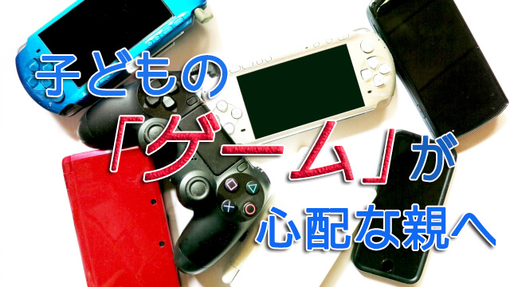

相変わらず「子どもがゲームばかりやって心配です」という親が多い。しかし結論を言えばこれはあまり心配するほどの問題ではない。
子どもはその時々で流行の「楽しいもの」に夢中になるのが常だ。親や周囲の大人がそれらを問題視したり禁止すればかえってやりたくなるから放っておくのがいちばんだと私は思っている。
今の親世代だってファミコンやテレビのアニメ、ドラマにはまって当時の親を心配させていたことを思い出して欲しい。私世代だとマンガやラジコン、プラモデルなどが子どもたちを夢中にさせていた。当然親たちは「勉強もしないで…」と渋い顔だったが…。
ちなみに私もマンガ少年だった。当時は少年マンガ雑誌の黎明期で、続々と新しい週刊雑誌が発刊されていた。私もその例にもれず小遣いを貯めてマンガ本を買いあさり、さらに読むだけでは飽き足らず自分でもマンガを描き始めた。実際小学生の頃はマンガ家になるつもりだったのだ。夜遅くまで熱心にマンガを描き続ける私を見て「それくらいの熱意で勉強してくれればいいのに…」と母はよくグチっていた。
今では考えられないが当時（昭和30年代後半）マンガは日本中の親から目の仇にされていた。手塚治虫のマンガでさえ、PTA(当時は巨大な影響力があった)が悪書として不買運動を全国的にくり広げたほどだ。理由は青少年を害するもの…だったと記憶する。
その後テレビが普及すると「テレビばかり見るとバカになる。目も悪くなる」という名目で子どもにテレビを見させない動きが広まった。（当時高名な評論家がテレビに夢中になることを「一億総白痴化」現象と名づけていた）
このようにマンガにしろテレビにしろ、子どもは時代の先端を行く新しい娯楽に敏感で楽しいもの面白いものに素直に反応する。逆に大人は新しいものにウサン臭さを感じる。それ故「子どもたちを弊害から守る」という名目のもと自らの不安を正当化しようとする。
結局いつの時代も子どもは何らかの楽しいモノに熱中し親は心配するという光景がくり返されてきたのだ。
だから「ゲームばかりやって」と心配する親は、「子どもが勉強そっちのけで何かに夢中になることが不安だ」という親特有の心理に囚われているだけではないか。そう振り返って欲しい。それは時代を超えてループする心理状態だからだ。
その自覚の上でゲームをする時間帯とか場所を決めるなど一定のルールを子どもと話し合って決めれば良いだけだ。
そして忘れてならないことは、子どもが何かに熱中することはむしろ健全なのだということ。勉強などより面白いことや楽しいことをしたがるのは子どもなら当たり前だということを前提に考えて欲しいということだ。
そしてもうひとつ大切なことは、子どももゲームやマンガなどから何かを学んでいるということ。たとえば子どもが遊びや娯楽を通して子どもなりに人生を学んでいることは学問的にも証明されている。昔なら女の子のママごとや男の子の秘密基地ごっこ、マンガやテレビに夢中になることも人生を彼らなりにシミュレーションしていると言えなくもない。
子どもたちはそれらの「遊び」を通して空想を広げ、世界の仕組みを仮想体験しているからだ。そこから本当の現実を生きる力を得ることもできる。
私もマンガから多く学んだ。それは一口で言えば創造する喜びだ。毎日何時間もマンガのストーリーを考え描く過程で、自ずと歴史や人間関係について調べて詳しくなったり何より一つのストーリー（物語）をつくり上げる喜びを知った。
もちろん私のマンガなど所詮稚拙で下手クソなモノだったが、何かをゼロから創造する楽しさを知ったことは大きい。仕事などでも大いに役立ったと実感している。
だから親はあまり目クジラをたてないほうが良い。少なくとも私の母のように「勉強のジャマだ」と言って頭ごなしに禁止しないことをお勧めする。ゲームなどはほとんどの子にとって一過性の遊びに過ぎない。すぐにバーチャルよりリアルな現実に興味の矛先は転換するからだ。（もっともゲーム好きが高じてゲームクリエイターになる子もいるが、それはそれで結構なことではないか）
くり返しになるが子どもが娯楽に熱中すること自体は健全であるということ。何にせよ何かに熱中することは悪いことではない。熱中することでしか得られない境地があるからだ。そういう子はきっかけがあれば勉強でも仕事でも情熱を込めてやりとげる能力があるからだ。
なので親は我が子がゲームに夢中でも「ウチの子あんなに好きなモノに熱中する能力があるのね」というくらい大らかに構えて欲しい。一番問題なのは何事にも熱中できない、何にも関心を持てない子のほうだからだ。
それより最近子どもより大人のほうがスマホゲームなどにハマっている様子にあるが、私的にはそちらのほうが心配…。大丈夫なんでしょうか？